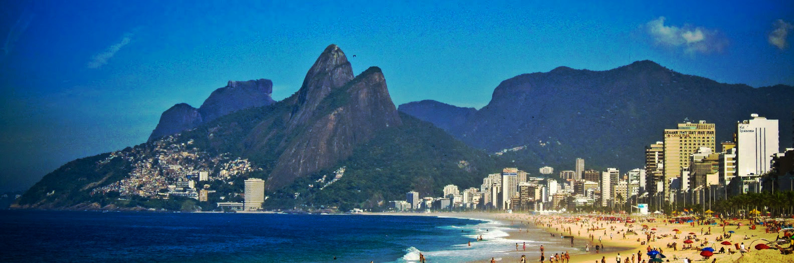

Vacation Maker!
Please fill out this survey to find your optimal destination!
Select the answers that most correspond to your true feelings:
Hoboken, New Jersey!
Hoboken is a unique, vibrant, walkable urban community just over one square mile in size. But don’t let the small size fool you:
- Hoboken was voted best downtown in Northern New Jersey (American Planning Association – NJ)
- Hoboken is ranked the #1 most walkable city in the country (WalkScore.com).
- Hoboken is ranked #1 city in public transportation use (U.S. Census).
- Hoboken was ranked #1 most exciting small city in America.
- Hoboken was named one of the Top 10 Best Cities for New College Grads (Livability.com)
- Hoboken’s Washington Street was named one of the Top 10 Great Streets for 2010 (American Planning Association, 2010)
- Hoboken’s South Waterfront was named one of New Jersey’s Top 10 Great Places (American Planning Association, NJ Chapter, 2013)
- Hoboken was designated a gold-level walk-friendly community in 2011.
- Hoboken was rated the best dining town in New Jersey (NJ Monthly Magazine).
- Hoboken was ranked a Top 10 college town in the country (Princeton Review, 2012).
- Hoboken achieved the Bronze Level Sustainable Jersey certification in 2011.
- Hoboken received the Leadership Award from Sustainable Jersey in 2011 for addressing alternative transportation and parking solutions.
- Hoboken received a Traffic Safety Excellence Award from Rutgers University/NJ DOT in 2011.
- Hoboken’s Pier A Park is ranked one of the top 10 urban parks in the country (Urban Land Institute)
- Hoboken was ranked #7 for best places to be rich and single (Money Magazine, 2014)
- Hoboken was ranked the #1 city in the country for Singles (Money Magazine, 2008)
- Hoboken was rated one of the top 10 best places to “ride out the gas crunch” due to the variety of transportation options available here (Money Magazine, 2008)
- Hoboken received an Honorable Mention in the Bicycle Friendly Communities listing (League of American Cyclists, Fall 2010)
As you explore our community you’ll see that Hoboken truly reflects the American experience. Many cultures from around the world have left an imprint, and they are still celebrated today.
From the city’s first recorded mention in 1609 by the navigator of Henry Hudson’s “Half Moon,” Hoboken has welcomed the Dutch, the Germans, the Italians, the Hispanics, the Asian Indians and others whose traditions have influenced our community.
Today, you will see a dynamic and vibrant city; one that still embraces the past but has also evolved into a dynamic residential, cultural, commercial, educational and tourist destination.
Drawing on its roots as the birthplace of baseball and Frank Sinatra, today Hoboken is home of TLC Network’s top rated “The Cake Boss,” as well as many community events, including cultural, music and ethnic festivals.
Much abounds in the music and arts community, complimented by eclectic restaurants, night clubs, a world class hotel, diverse retail shopping, along with a spectacular waterfront with uncompromising views of Manhattan and New York Harbor.
I was born in Hoboken!
Singapore!
Singapore has a past rich in history and cultural heritage, stemming from the pre-colonial relics of Temasek, a sea town and trading post, through the founding and settlement of Modern Singapore by the British, the World Wars, and independence. The island nation also stands at the crossroads of the different cultures of Asia, and is a gateway between the East and the West, resulting in a truly cosmopolitan society, a country of different pasts and histories. Find out how Singapore evolved over the years from a sleepy fishing village to the bustling metropolis it is today, and learn about the culture of the people, including the official (and unofficial) languages of Singapore.
There isn’t anywhere else on Earth where people confluence - like the way they do in Singapore. From visitors and transients to citizens, this progressive island and gateway to South East Asia is a dynamic mix of cultures, ideas and histories neither ethnic nor exotic, instead, the essence of modern Asia - sparklingly savvy, with a touch of old school. The first-time visitor should expect to be surprised, confused, and, charmed.
Salvador de Bahia, Brazil!
Bahia is the soul of Brazil. In this northeastern state more than anywhere else, the country’s cultures and races have mixed, producing, many believe, what is most authentically Brazilian.
With over 1000km of coconut-fringed beaches and the most agreeable climate in the region – hot and sunny, but not as blistering as elsewhere – Bahia has long been one of the country’s most popular destinations for foreign visitors. Constituting over a third of Northeast Brazil, it sits to the south of the area’s other states. At its heart are the Chapada Diamantina Mountains, offering breathtaking trekking and climbing opportunities, while just north of there, the massive São Francisco Lakes are popular for canoeing and watersports. The countryside changes to the south of the state capital, Salvador (site of the first Portuguese landings in 1500), with mangrove swamps and fast-developing island resorts around the town of Valença, before reverting to a spectacular coastline.
A string of colonial towns, including Santo Amaro and Cachoeira, also lie within striking distance of Salvador. Further south, Ilhéus is a thriving beach resort, as is Porto Seguro, whose early settlement pre-dates even Salvador’s. Beyond the coastline, Bahia comprises a vast grain-producing western sector and semi-arid landscape. The Bahian sertão is massive, a desert-like land that supports some fascinating towns – the ex-mining bases of Jacobina and Lençóis and the river terminus of Ibotirama are just three.
The bay on which Salvador was built afforded its settlers a superb natural anchorage, while the surrounding lands of Bahia state were ideal country for sugar-cane and tobacco plantations. In the seventeeth century, Salvador became the centre of the Recôncavo, the richest plantation zone in Brazil before the arrival of coffee the following century. It was the national capital for over two centuries, before relinquishing the title to Rio in 1763.
Carnaval reaches a frenzied peak in Salvador every February, when the city heaves with two million people enjoying traditional tunes, from the popular and loud Barra seaside suburb to the more arty Pelhourinho.